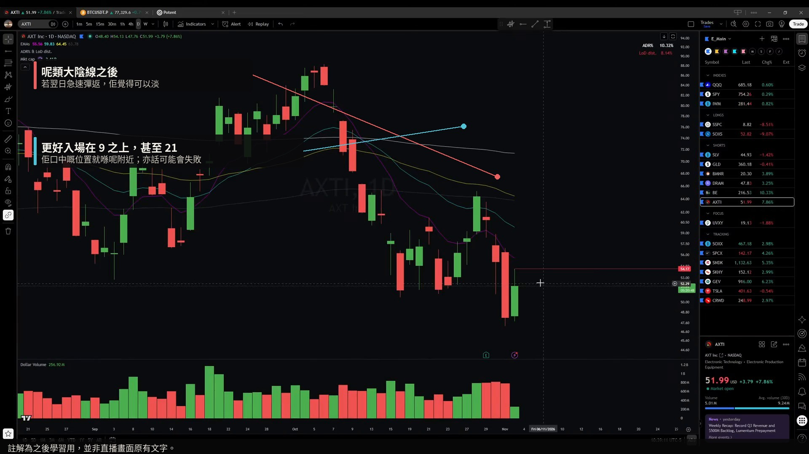

概要
大陰線之後嘅急彈，可以淡，但位置有好壞
1:16:57 開始討論呢隻股票；畫面約 1:17:10 先穩定喺 AXTI 日線。Whisper 開首聽成 YHTI，本頁按畫面更正為 AXTI。聊天室或者對白提到離日線均線好遠、以及 declining 9、expecting the fade。佢話若今日收弱，9 EMA 可能慢慢下移。之後講一般情況：呢類大陰線之後，若翌日或者再下一日急速彈返，係頗為 shortable；但更好入場會喺 9 之上，甚至 21，所以而家呢下 probably it's gonna fail。
圖一 · 主圖
AXTI 日線：大陰線後急彈，更好位置更高
直播 1:17:21

原話
AXTI is nowhere near any daily EMAs. Yes, but it's kind of like the declining 9, but expecting the fade. Like if we close weak today, maybe the 9 EMAs would be gradually moving lower.
AXTI 離任何日線均線都仲好遠。係，不過有啲似呢條下降緊嘅 9，但預期係 fade。如果今日收弱，或者 9 EMA 會慢慢下移。
原話
Like after this type of huge breakdown candle, and if we got a really quick snapback the next day, or maybe the day after today, that is pretty shortable. But I think definitely maybe the better entries would be like above the 9, or maybe even at the 21. So yeah, probably it's gonna fail.
呢類大陰線之後，如果第二日，或者再下一日，出現好急嘅彈返，係頗為 shortable。但我覺得更好嘅入場肯定會喺 9 之上，甚至係 21。所以係，呢下可能會失敗。
點樣讀
日線見到一根明顯大陰線，之後有快速反彈。佢把「大破位之後嘅急彈」讀成可以淡嘅類型，但隨即比較位置：更好係回到 9 之上，甚至 21。
“probably it's gonna fail” 係指而家呢個未去到更好位置嘅淡倉可能會失敗，唔係斷言股票一定再升。圖例冇印周期，只標口中嘅 9 同 21 就喺呢附近。
附註
注意事項
- Whisper 把 AXTI 聽成 YHTI，把 close weak 聽成 close week。本頁按畫面同語境更正。
- 「離任何日線均線都仲好遠」同「kind of like the declining 9」係同一段對話入面嘅兩句，要一齊讀，唔好只抽一句。
- 圖例多數只有顏色同數值，冇印均線周期。本頁唔會把某條彩線寫死成 9 或者 21。
- 畫面睇唔到成交價、倉位大細或者損益，所以唔寫死呢啲數字。